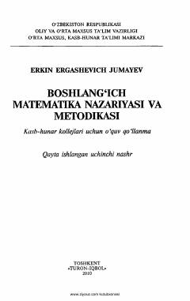

BMKasb-hunar kollejlari uchun boshlang'ich matematika nazariyasi va metodikasi o'quv qo'llanmasi.
Mazkur o'quv qo'llanma pedagogik yo'nalishdagi kasb-hunar kollejlari o'quvchilari uchun boshlang'ich matematika nazariyasi va metodikasini o'rgatishga bag'ishlangan. Unda matematika asoslari, nazariy materiallar bilan birga amaliy mashg'ulotlar uchun misol, masalalar va topshiriqlar keng yoritilgan.